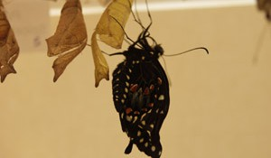

Educational Links
How do butterflies/moths spread their wings after emerging?
Christina Reiman Butterfly Wing Plants
How can you determine the sex of a butterfly?
What is the smallest and largest butterfly/moth found at Reiman Gardens

How do butterflies use their wing colors?

The Cinque Terre: A rugged portion of coast in the Liguria region of Italy.
The Cinque Terre: A rugged portion of coast in the Liguria region of Italy.